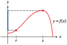
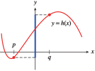
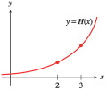
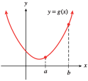
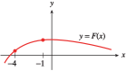
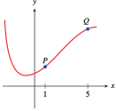
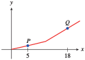
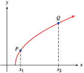

Section 1.4 Slope and Rate of Change
¶Subsection Using Ratios for Comparison
Which is more expensive, a 64-ounce bottle of Velvolux dish soap that costs $3.52, or a 60-ounce bottle of Rainfresh dish soap that costs $3.36?
You are probably familiar with the notion of comparison shopping. To decide which dish soap is the better buy, we compute the unit price, or price per ounce, for each bottle. The unit price for Velvolux is
and the unit price for Rainfresh is
The Velvolux costs less per ounce, so it is the better buy. By computing the price of each brand for the same amount of soap, it is easy to compare them.
In many situations, a ratio, similar to a unit price, can provide a basis for comparison. Example 1.97 uses a ratio to measure a rate of growth.
Example 1.97.
Which grow faster, Hybrid A wheat seedlings, which grow 11.2 centimeters in 14 days, or Hybrid B seedlings, which grow 13.5 centimeters in 18 days?
We compute the growth rate for each strain of wheat. Growth rate is expressed as a ratio, \(\dfrac{\text{centimeters}}{\text{days}}\text{,}\) or centimeters per day. The growth rate for Hybrid A is
and the growth rate for Hybrid B is
Because their rate of growth is larger, the Hybrid A seedlings grow faster.
By computing the growth of each strain of wheat seedling over the same unit of time, a single day, we have a basis for comparison. In this case, the ratio \(\dfrac{\text{centimeters}}{\text{day}}\) measures the rate of growth of the wheat seedlings.
Notebook 1.98. Practice 1.
Notebook 1.99. QuickCheck 1.
In Notebook 1.98, the ratio \(\dfrac{\text{miles}}{\text{gallon}}\) measures the rate at which each car uses gasoline. By computing the mileage for each car for the same amount of gas, we have a basis for comparison. We can use this same idea, finding a common basis for comparison, to measure the steepness of an incline.
Subsection Measuring Steepness
Imagine you are an ant carrying a heavy burden along one of the two paths shown below. Which path is more difficult? Most ants would agree that the steeper path is more difficult.
But what exactly is steepness? It is not merely the gain in altitude, because even a gentle incline will reach a great height eventually. Steepness measures how sharply the altitude increases. An ant finds the second path more difficult, or steeper, because it rises 5 feet while the first path rises only 2 feet over the same horizontal distance.
To compare the steepness of two inclined paths, we compute the ratio of change in altitude to change in horizontal distance for each path.
Example 1.100.
Which is steeper, Stony Point trail, which climbs 400 feet over a horizontal distance of 2500 feet, or Lone Pine trail, which climbs 360 feet over a horizontal distance of 1800 feet?
For each trail, we compute the ratio of vertical gain to horizontal distance. For Stony Point trail, the ratio is
and for Lone Pine trail, the ratio is
Lone Pine trail is steeper, because it has a vertical gain of 0.20 foot for every foot traveled horizontally. Or, in more practical units, Lone Pine trail rises 20 feet for every 100 feet of horizontal distance, whereas Stony Point trail rises only 16 feet over a horizontal distance of 100 feet.
Notebook 1.101. Practice 2.
Subsection Definition of Slope
To compare the steepness of the two trails in Example 1.100, it is not enough to know which trail has the greater gain in elevation overall. Instead, we compare their elevation gains over the same horizontal distance. Using the same horizontal distance provides a basis for comparison. The two trails are illustrated below as lines on a coordinate grid.

The ratio we computed in Example 1.100,
appears on the graphs as
For example, as we travel along the line representing Stony Point trail, we move from the point \((0, 0)\) to the point \((2500, 400)\text{.}\) The \(y\)-coordinate changes by \(400\) and the \(x\)-coordinate changes by \(2500\text{,}\) giving the ratio \(0.16\) that we found in Example 1.100. We call this ratio the slope of the line.
Definition of Slope.
The slope of a line is the ratio
as we move from one point to another on the line.
Example 1.102.
Compute the slope of the line that passes through points \(A\) and \(B\) on the graph at right.

As we move along the line from \(A\) to \(B\text{,}\) the \(y\)-coordinate changes by \(3\) units, and the \(x\)-coordinate changes by \(4\) units. The slope of the line is thus
Notebook 1.103. Practice 3.
Notebook 1.104. QuickCheck 3.
Note 1.105.
The slope of a line is a number. It tells us how much the \(y\)-coordinates of points on the line increase when we increase their \(x\)-coordinates by 1 unit. For instance, the slope \(\dfrac{3}{4}\) in Example 1.102 means that the \(y\)-coordinate increases by \(\dfrac{3}{4}\) unit when the \(x\)-coordinate increases by 1 unit. For increasing graphs, a larger slope indicates a greater increase in altitude, and hence a steeper line.
Subsection Notation for Slope
We use a shorthand notation for the ratio that defines slope,
The symbol \(\Delta\) (the Greek letter delta) is used in mathematics to denote change in. In particular, \(\Delta y\) means change in \(y\)-coordinate, and \(\Delta x\) means change in \(x\)-coordinate. We also use the letter \(m\) to stand for slope. With these symbols, we can write the definition of slope as follows.
Notation for Slope.
The slope of a line is given by

Example 1.106.
The Great Pyramid of Khufu in Egypt was built around 2550 B.C. It is 147 meters tall and has a square base 229 meters on each side. Calculate the slope of the sides of the pyramid, rounded to two decimal places.
From the figure, we see that \(\Delta x\) is only half the base of the Great Pyramid, so
and the slope of the side is

Notebook 1.107. Practice 4.
The Kukulcan Pyramid at Chichen Itza in Mexico was built around 800 A.D. It is \(24\) meters high, with a temple built on its top platform, as shown at right.
So far, we have only considered examples in which \(\Delta x\) and \(\Delta y\) are positive numbers, but they can also be negative.
Example 1.108.
Compute the slope of the line that passes through the points \(P(-4, 2)\) and \(Q(5, -1)\) shown in at right. Illustrate \(\Delta y\) and \(\Delta x\) on the graph.
As we move from the point \(P(-4, 2)\) to the point \(Q(5, -1)\text{,}\) we move \(3\) units down, so \(\Delta y = -3\text{.}\) We then move \(9\) units to the right, so \(\Delta x = 9\text{.}\)Thus, the slope is
\(\Delta y\) and \(\Delta x\) are labeled on the graph.
Notebook 1.109. Pause and Reflect.
We can move from point to point in either direction to compute the slope. The line graphed in Example 1.108 decreases as we move from left to right and hence has a negative slope.
The slope is the same if we move from point \(Q\) to point \(P\) instead of from \(P\) to \(Q\text{,}\) as shown at right. In that case, our computation looks like this:
\(\Delta y\) and \(\Delta x\) are labeled on the graph.
Subsection Lines Have Constant Slope
How do we know which two points to choose when we want to compute the slope of a line? It turns out that any two points on the line will do.
Notebook 1.110. Practice 5.
Here is a graph of the line.

Note 1.111.
Notebook 1.110 illustrates an important property of lines: They have constant slope. No matter which two points we use to calculate the slope, we will always get the same result. We will see later that lines are the only graphs that have this property.
We can think of the slope as a scale factor that tells us how many units \(y\) increases (or decreases) for each unit of increase in \(x\text{.}\) Compare the lines shown below.

Notebook 1.112. QuickCheck 4.
Observe that a line with positive slope increases from left to right, and one with negative slope decreases. What sort of line has slope \(m = 0\text{?}\)
Subsection Meaning of Slope
In Example 1, we graphed the equation \(C = 5 + 3t\) showing the cost of a bicycle rental in terms of the length of the rental. The graph is reproduced at right. We can choose any two points on the line to compute its slope. Using points \(P\) and \(Q\) as shown, we find that
The slope of the line is \(3\text{.}\)

What does this value mean for the cost of renting a bicycle? The expression
stands for
If we increase the length of the rental by 3 hours, the cost of the rental increases by 9 dollars. The slope gives the rate of increase in the rental fee, 3 dollars per hour. In general, we can make the following statement.
Rate of Change.
The slope of a line measures the rate of change of the output variable with respect to the input variable.
Depending on the variables involved, this rate might be interpreted as a rate of growth or a rate of speed. A negative slope might represent a rate of decrease or a rate of consumption. The slope of a graph can give us valuable information about the variables.
Example 1.113.
The graph at right shows the distance in miles traveled by a big-rig truck driver after \(t\) hours on the road.
- Compute the slope of the graph.
- What does the slope tell us about the problem?

-
Choose any two points on the line, say \(G(2, 100)\) and \(H(4, 200)\text{,}\) as shown. As we move from \(G\) to \(H\text{,}\) we find
\begin{equation*} m = \frac{\Delta D}{\Delta t}=\frac{100}{2}=50 \end{equation*}The slope of the line is 50.
-
The best way to understand the slope is to include units in the calculation. For our example,
\begin{equation*} \frac{\Delta D}{\Delta t}~~~~ \text{ means }~~~~ \frac{\text{change in distance}}{\text{change in time}} \end{equation*}or
\begin{equation*} \frac{\Delta D}{\Delta t} =\frac{100 \text{ miles}}{2\text{ hours}} =50 \text{ miles per hour} \end{equation*}The slope represents the trucker’s average speed or velocity.
Notebook 1.114. Practice 6.
The graph shows the altitude, \(a\) (in feet), of a skier \(t\) minutes after getting on a ski lift.
Notebook 1.115. Pause and Reflect.
Subsection A Formula for Slope
We have defined the slope of a line to be the ratio \(m = \dfrac{\Delta y}{\Delta x}\) as we move from one point to another on the line. So far, we have computed \(\Delta y\) and \(\Delta x\) by counting squares on the graph, but this method is not always practical. All we really need are the coordinates of two points on the graph.
Subscripts.
We will use subscripts to distinguish the two points:
We denote the coordinates of \(P_1\) by \((x_1, y_1)\) and the coordinates of \(P_2\) by \((x_2, y_2)\text{.}\)

Now consider a specific example. The line through the two points \(P_1 (2, 9)\) and \(P_2 (7,-6)\) is shown at left. We can find \(\Delta x\) by subtracting the \(x\)-coordinates of the points:
In general, we have
and similarly
These formulas work even if some of the coordinates are negative; in our example
By counting squares down from \(P_1\) to \(P_2\text{,}\) we see that \(\Delta y\) is indeed \(-15\text{.}\) The slope of the line is
We now have a formula for the slope of a line that works even if we do not have a graph.
Two-Point Slope Formula.
The slope of the line passing through the points \(P_1 (x_1, y_1)\) and \(P_2 (x_2, y_2)\) is given by
Example 1.116.
Compute the slope of the line above using the points \(Q_1 (6, -3)\) and \(Q_2 (4, 3)\text{.}\)
We substitute the coordinates of \(Q_1\) and \(Q_2\) into the slope formula to find
This value for the slope, \(-3\text{,}\) is the same value we found above.
Notebook 1.117. Practice 7.
Notebook 1.118. QuickCheck 5.
It will also be useful to write the slope formula with function notation. Recall that \(f (x)\) is another symbol for \(y\text{,}\) and, in particular, that \(y_1 = f (x_1)\) and \(y_2 = f (x_2)\text{.}\) Thus, if \(x_2 \ne x_1\text{,}\) we have this formula.
Slope Formula in Function Notation.
Example 1.119.
The figure shows a graph of
- Compute the slope of the line segment joining the points at \(x = 1\) and \(x = 4\text{.}\)
- Compute the slope of the line segment joining the points at \(x = 2\) and \(x = 5\text{.}\)

- We set \(x_1 = \alert{1}\) and \(x_2 = \alert{4}\) and find the function values at each point.\begin{equation*} f (x_1) = f (\alert{1}) = \alert{1}^2 - 6(\alert{1}) = -5 \end{equation*}\begin{equation*} f (x_2) = f (\alert{4}) = \alert{4}^2 - 6(\alert{4}) = -8 \end{equation*}Then\begin{equation*} m = \frac{f (x_2) - f (x_1)}{x_2 - x_1} =\frac{-8 - (-5)}{4 - 1}=\frac{-3}{3}= -1 \end{equation*}
- We set \(x_1 = \alert{2}\) and \(x_2 = \alert{5}\) and find the function values at each point.\begin{equation*} f (x_1) = f (\alert{2}) = \alert{2}^2 - 6(\alert{2}) = -8 \end{equation*}\begin{equation*} f (x_2) = f (\alert{5}) = \alert{5}^2 - 6(\alert{5}) = -5 \end{equation*}Then\begin{equation*} m = \frac{f (x_2) - f (x_1)}{x_2 - x_1} =\frac{-5 - (-8)}{5 - 2}=\frac{3}{3}= 1 \end{equation*}
Note that the graph of \(f\) is not a straight line and that the slope is not constant.
Notebook 1.120. Practice 8.
The figure shows the graph of a function \(f\text{.}\)
Notebook 1.121. Pause and Reflect.
Subsection Section Summary
¶Subsubsection Vocabulary
Look up the definitions of new terms in the Glossary.
Ratio
Rate of change
Slope
Scale factor
Subsubsection CONCEPTS
We can use ratios to compare quantities.
The slope ratio, \(\dfrac{\text{change in y-coordinate}}{\text{change in }x\text{-coordinate}}\text{,}\) measures the steepness of a line.
Notation for slope: \(m = \dfrac{\Delta y}{\Delta x}\text{,}\) \(\Delta x \ne 0\text{.}\)
Formula for slope: \(m =\dfrac{y_2 - y_1}{x_2 - x_1}\text{,}\) \(~~x_2\ne x_1 \)
Formula for slope: \(m =\dfrac{f(x_2) - f(x_1)}{x_2 - x_1}\text{,}\) \(~~x_2\ne x_1 \)
Lines have constant slope.
Slope is a scale factor that tells us how many units \(\Delta y\) increases for each unit increase in \(\Delta x\) as we move along the line.
The slope gives us the rate of change.
Subsubsection STUDY QUESTIONS
Explain how to compare prices with unit pricing.
Why is \(\Delta y\) the numerator of the slope ratio and \(\Delta x\) the denominator?
Which line is steeper, one with \(m = -2\) or one with \(m = -5\text{?}\)
A classmate says that you must always use the intercepts to calculate the slope of a line. Do you agree? Explain.
In an application, what does the slope of the graph tell you about the situation?
Subsubsection SKILLS
Practice each skill in the Homework problems listed.
Use ratios for comparison: #1–4
Compute slope from a graph: #5–16, 23–26
Use slope to find \(\Delta y\) or \(\Delta x\text{:}\) #17–20, 27–30
Use slope to compare steepness: #21 and 22
Decide whether data points lie on a straight line: #41–46
Interpret slope as a rate of change: #31–40
Use function notation to discuss graphs and slope: #53–62
Exercises Homework 1.4
¶Compute ratios to answer the questions in Problems 1–4.
1.
Carl runs \(100\) meters in \(10\) seconds. Anthony runs \(200\) meters in \(19.6\) seconds. Who has the faster average speed?
2.
On his \(512\)-mile round trip to Las Vegas and back, Corey needed \(16\) gallons of gasoline. He used \(13\) gallons of gasoline on a \(429\)-mile trip to Los Angeles. On which trip did he get better fuel economy?
3.
Grimy Gulch Pass rises \(0.6\) miles over a horizontal distance of \(26\) miles. Bob's driveway rises \(12\) feet over a horizontal distance of \(150\) feet. Which is steeper?
4.
Which is steeper, the truck ramp for Acme Movers, which rises \(4\) feet over a horizontal distance of \(9\) feet, or a toy truck ramp, which rises \(3\) centimeters over a horizontal distance of \(7\) centimeters?
In Problems 5-8, compute the slope of the line through the indicated points. On both axes, one square represents one unit.
5.

6.
7.
8.

For Problems 9–14,
Graph each line by the intercept method.
Use the intercepts to compute the slope.
9.
\(3x - 4y = 12\)
10.
\(2y - 5x = 10\)
11.
\(2y + 6x = -18\)
12.
\(9x + 12y = 36\)
13.
\(\dfrac{x}{5}- \dfrac{y}{8}= 1\)
14.
\(\dfrac{x}{7}- \dfrac{y}{4}= 1\)
15.
Use the points \((0, 2)\) and \((4, 8)\) to compute the slope of the line. Illustrate \(\Delta y\) and \(\Delta x\) on the graph.
Use the points \((-4, -4)\) and \((4, 8)\) to compute the slope of the line. Illustrate \(\Delta y\) and \(\Delta x\) on the graph.
Use the points \((0, 2)\) and \((-6, -7)\) to compute the slope of the line. Illustrate \(\Delta y\) and \(\Delta x\) on the graph.

16.
Use the points \((0, -6)\) and \((8, -12)\) to compute the slope of the line. Illustrate \(\Delta y\) and \(\Delta x\) on the graph.
Use the points \((-8, 0)\) and \((4, -9)\) to compute the slope of the line. Illustrate \(\Delta y\) and \(\Delta x\) on the graph.
Use the points \((4, -9)\) and \((0, -6)\) to compute the slope of the line. Illustrate \(\Delta y\) and \(\Delta x\) on the graph.

For Problems 17–20, use the formula \(m=\dfrac{\Delta y}{\Delta x} \)
17.
A line has slope \(\dfrac{-3}{4}\text{.}\)
-
Find the vertical change associated with each horizontal change along the line.
\(\Delta x = 4\)
\(\Delta x = -8\)
\(\Delta x = 2\)
\(\Delta x = -6\)
-
Find the horizontal change associated with each vertical change along the line.
\(\Delta y = 3\)
\(\Delta y = -6\)
\(\Delta y = -2\)
\(\Delta y = 1\)
18.
A line has slope \(\dfrac{5}{3}\text{.}\)
-
Find the vertical change associated with each horizontal change along the line.
\(\Delta x = 3\)
\(\Delta x = -6\)
\(\Delta x = 1\)
\(\Delta x = -24\)
-
Find the horizontal change associated with each vertical change along the line.
\(\Delta y = -5\)
\(\Delta y = -2.5\)
\(\Delta y = -1\)
\(\Delta y = 3\)
19.
Residential staircases are usually built with a slope of \(70\%\text{,}\) or \(\dfrac{7}{10}\text{.}\) If the vertical distance between stories is \(10\) feet, how much horizontal space does the staircase require?
20.
A straight section of highway in the Midwest maintains a grade (slope) of \(4\%\text{,}\) or \(\dfrac{1}{25}\text{,}\) for \(12\) miles. How much does your elevation change as you travel the road?
21.
Choose the line with the correct slope. The scales are the same on both axes.
\(m=2\)
\(m=-\dfrac{1}{2} \)
\(m=\dfrac{2}{3} \)
\(m=-\dfrac{5}{3} \)

22.
Choose the line with the correct slope. The scales are the same on both axes.
\(0\lt m \lt 1\)
\(m \lt -1\)
\(m= \gt 1 \)
\(m=0 \)
Compute the slope of the line in Problems 23-26. Note the scales on the axes.
23.

24.

25.

26.

Each table in Problems 27–30 gives the coordinates of points on a line.
Find the slope of the line.
Fill in the missing table entries.
27.
| \(x\) | \(y\) |
| \(-4\) | \(-14\) |
| \(-2\) | \(-9\) |
| \(2\) | \(1\) |
| \(3\) | \(\) |
| \(\) | \(11\) |
28.
| \(x\) | \(y\) |
| \(-5\) | \(-3.8\) |
| \(-1\) | \(-0.6\) |
| \(2\) | \(1.8\) |
| \(\) | \(4.2\) |
| \(7\) | \(\) |
29.
| \(x\) | \(y\) |
| \(-3\) | \(36\) |
| \(-1\) | \(\) |
| \(\) | \(12\) |
| \(6\) | \(9\) |
| \(10\) | \(-3\) |
30.
| \(x\) | \(y\) |
| \(-10\) | \(800\) |
| \(-2\) | \(\) |
| \(5\) | \(440\) |
| \(\) | \(368\) |
| \(16\) | \(176\) |
31.
A temporary typist's paycheck (before deductions) is given, in dollars, by \(S = 8t\text{,}\) where \(t\) is the number of hours she worked.
-
Make a table of values for the function.
\(t\) \(4\) \(8\) \(20\) \(40\) \(S\) \(\hphantom{0000} \) \(\hphantom{0000}\) \(\hphantom{0000}\) \(\hphantom{0000}\) Graph the function.
Using two points on the graph, compute the slope \(\dfrac{\Delta S}{\Delta t}\text{,}\) including units.
What does the slope tell us about the typist's paycheck?
32.
The distance (in miles) covered by a cross-country competitor is given by \(d = 6t\text{,}\) where \(t\) is the number of hours she runs.
-
Make a table of values for the function.
\(t\) \(2\) \(4\) \(6\) \(8\) \(d\) \(\hphantom{0000} \) \(\hphantom{0000}\) \(\hphantom{0000}\) \(\hphantom{0000}\) Graph the function.
Using two points on the graph, compute the slope \(\dfrac{\Delta d}{\Delta t}\text{,}\) including units.
What does the slope tell us about the cross-country runner?
In Problems 33–40,
Choose two points and compute the slope of the graph (including units).
Explain what the slope measures in the context of the problem.
33.
The graph shows the number of barrels of oil, \(B\text{,}\) that has been pumped at a drill site \(t\) days after a new drill is installed.

34.
The graph shows the amount of garbage, \(G\) (in tons), that has been deposited at a dump site \(t\) years after new regulations go into effect.

35.
The graph shows the amount of emergency water, \(W\) (in liters), remaining in a southern California household \(t\) days after an earthquake.

36.
The graph shows the amount of money, \(M\) (in dollars), in Tammy's bank account \(w\) weeks after she loses all sources of income.

37.
The graph shows the length in inches, \(i\text{,}\) corresponding to various lengths in feet \(f\text{.}\)
38.
The graph shows the number of ounces, \(z\text{,}\) that correspond to various weights measured in pounds, \(p\text{.}\)

39.
The graph shows the cost, \(C\) (in dollars), of coffee beans in terms of the amount of coffee, \(b\) (in kilograms).

40.
The graph shows Tracey's earnings, \(E\) (in dollars), in terms of the number of hours, \(h\text{,}\) that she babysits.

Which of the tables in Problems 41 and 42 represent variables that are related by a linear function? (Hint: Which relationships have constant slope?)
41.
\(x\) \(y\) \(2\) \(12\) \(3\) \(17\) \(4\) \(22\) \(5\) \(27\) \(6\) \(32\) \(t\) \(P\) \(2\) \(4\) \(3\) \(9\) \(4\) \(16\) \(5\) \(25\) \(6\) \(36\)
42.
\(h\) \(w\) \(-6\) \(20\) \(-3\) \(18\) \(0\) \(16\) \(3\) \(14\) \(6\) \(12\) \(t\) \(d\) \(5\) \(0\) \(10\) \(3\) \(15\) \(6\) \(20\) \(12\) \(25\) \(24\)
43.
The table shows the amount of ammonium chloride salt, in grams, that can be dissolved in 100 grams of water at different temperatures.
| Temperature,\(\degree\)C | \(10\) | \(12\) | \(15\) | \(21\) | \(25\) | \(40\) | \(52\) |
| Grams of salt | \(33 \) | \(34\) | \(35.5\) | \(38.5\) | \(40.5\) | \(48\) | \(54\) |
If you plot the data, will the points lie on a straight line? Why or why not?
Calculate the rate of change of salt dissolved with respect to temperature.
44.
A spring is suspended from the ceiling. The table shows the length of the spring, in centimeters, as it is stretched by hanging various weights from it.
| Weight, kg | \(3\) | \(4\) | \(8\) | \(10\) | \(12\) | \(15\) | \(22\) |
| Length, cm | \(25.87 \) | \(25.88\) | \(26.36\) | \(26.6\) | \(26.84\) | \(27.2\) | \(28.04\) |
If you plot the data, will the points lie on a straight line? Why or why not?
Calculate the rate of change of length with respect to weight.
45.
The table gives the radius and circumference of various circles, rounded to three decimal places.
| \(r\) | \(C\) |
| \(4\) | \(25.133\) |
| \(6\) | \(37.699\) |
| \(10\) | \(62.832\) |
| \(15\) | \(94.248\) |
If we plot the data, will the points lie on a straight line?
What familiar number does the slope turn out to be? (Hint: Recall a formula from geometry.)
46.
The table gives the side and the diagonal of various squares, rounded to three decimal places.
| \(s\) | \(d\) |
| \(3\) | \(4.243\) |
| \(6\) | \(8.485\) |
| \(8\) | \(11.314\) |
| \(10\) | \(14.142\) |
If we plot the data, will the points lie on a straight line?
What familiar number does the slope turn out to be? (Hint: Draw a picture of one of the squares and use the Pythagorean theorem to compute its diagonal.)
47.
Geologists can measure the depth of the ocean at different points using a technique called echo-sounding. Scientists on board a ship send a pulse of sound toward the ocean floor and measure the time interval until the echo returns to the ship. The speed of sound in seawater is about \(1500\) meters per second.
Write the speed of sound as a ratio.
If the echo returns in \(4.5\) seconds, what is the depth of the ocean at that point?
48.
Niagara Falls was discovered by Father Louis Hennepin in 1682. In 1952, much of the water of the Niagara River was diverted for hydroelectric power, but until that time erosion caused the Falls to recede upstream by \(3\) feet per year.
How far did the Falls recede from 1682 to 1952?
The Falls were formed about \(12,000\) years ago during the end of the last ice age. How far downstream from their current position were they then? (Give your answer in miles.)
49.
Geologists calculate the speed of seismic waves by plotting the travel times for waves to reach seismometers at known distances from the epicenter. The speed of the wave can help them determine the nature of the material it passes through. The graph shows a travel-time graph for P-waves from a shallow earthquake.

Why do you think the graph is plotted with distance as the input variable?
Use the graph to calculate the speed of the wave.
50.
Energy (supplied by heat) is required to raise the temperature of a substance, and it is also needed to melt a solid substance to a liquid. The table shows data from heating a solid sample of stearic acid. Heat was applied at a constant rate throughout the experiment. (Source: J. A. Hunt and A. Sykes, 1984)
| Time (minutes | \(0\) | \(0.5\) | \(1.5\) | \(2\) | \(2.5\) | \(3\) | \(4\) | \(5\) | \(6\) | \(7\) | \(8\) | \(8.5\) | \(9\) | \(9.5\) | \(10\) |
| Temperature, \(\degree\)C | \(19 \) | \(29\) | \(40\) | \(48\) | \(53\) | \(55\) | \(55\) | \(55 \) | \(55\) | \(55\) | \(55\) | \(64\) | \(70\) | \(73\) | \(74\) |
Did the temperature rise at a constant rate? Describe the temperature as a function of time.
Graph temperature as a function of time.
What is the melting point of stearic acid? How long did it take the sample to melt?
51.
The graph shows the temperature of the ocean as a function of depth.

What is the difference in temperature between the surface of the ocean and the deepest level shown?
Over what depths does the temperature change most rapidly?
What is the average rate of change of temperature with respect to depth in the region called the thermocline?
52.
The graph shows the average air temperature as a function of altitude. (Figure (b) is an enlargement of the indicated region of Figure (a).) (Source: Ahrens, 1998)

Is temperature a decreasing function of altitude?
The lapse rate is the rate at which the temperature changes with altitude. In which regions of the atmosphere is the lapse rate positive?
The region where the lapse rate is zero is called the isothermal zone. Give an interval of altitudes that describes the isothermal zone.
What is the lapse rate in the mesosphere?
Describe the temperature for altitudes greater than 90 kilometers.
In Problems 53–56, evaluate the function at \(x = a\) and \(x = b\text{,}\) and then find the slope of the line segment joining the two corresponding points on the graph. Illustrate the line segment on a graph of the function.
53.
\(f (x) = x^2 - 2x - 8\)
\(a=-2, b = 1\)
\(a=-1, b = 5\)
54.
\(g(x) = \sqrt{x+4} \)
\(a=-2, b = 0\)
\(a = 0, b = 5\)
55.
\(h(x) =\dfrac{4}{x+2} \)
\(a = 0, b = 6\)
\(a=-1, b = 2\)
56.
\(q(x) = x^3 - 4x \)
\(a=-1, b = 2\)
\(a=-1, b = 3\)
In Problems 57–62, find the coordinates of the indicated points, then write an algebraic expression using function notation for the indicated quantity.
57.
The length of the vertical line segment on the \(y\)-axis

- 
58.
The length of the vertical line segment on the \(y\)-axis

- 
59.
-
The increase in \(y\) as \(x\) increases from \(2\) to \(3\)
 -
The increase in \(y\) as \(x\) increases from \(a\) to \(b\)

60.
-
The increase in \(y\) as \(x\) increases from \(-4\) to \(-1\)
 -
The increase in \(y\) as \(x\) increases from \(u\) to \(v\)

61.
The shaded area


62.
The shaded area


In Problems 63–66, find the coordinates of the indicated points on the graph of \(y = f (x)\) and write an algebraic expression using function notation for the slope of the line segment joining points \(P\) and \(Q\text{.}\)
63.
- 

64.
- 

65.


66.
- 